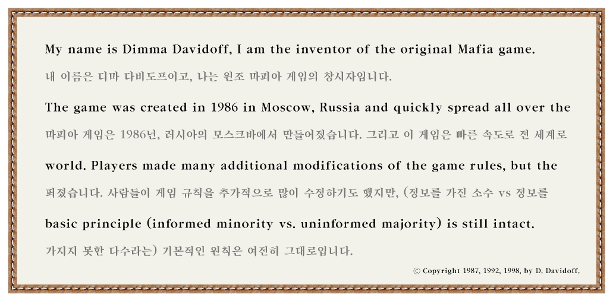

이 글을 읽는 대부분의 사람들은 마피아 게임을 한 번은 해보았거나, 적어도 들어본 적은 있을 것이다. 심지어 마피아 게임은 국내뿐 아니라전 세계인들이 즐기는 게임이며, 아직까지도 이 게임에서 파생된 다양한 게임 및 상품들이 꾸준히 생성되고 있다. 이만큼 널리 알려진 게임이지만 이 게임이 대체 어디서 어떻게 시작되었는지에 대해서는 깊게 생각해 본 적 없을 것이다. 하지만 신기하지 않은가? 특별한 도구 없이사람들의 대화에만 의존하는, 꽤나 아날로그적인 이 게임이 어떻게 이렇게까지 널리 퍼질 수 있었을까? 이 글에서는 마피아 게임의 역사와기원에 대해 탐구해보고자 한다. 그 시작을 알고 나면, 마피아 게임 속에 생각보다 훨씬 더 큰 사회학적, 심리학적 의미가 내포되어 있다는 것을 느낄 수 있을 것이다.

위 내용은 마피아 게임의 원작자 드미트리 다비도프(Dimitry Davidoff)가
자신의 홈페이지에 남긴 말의 일부이다. 1986년, 모스크바 대학의심리학과
학생 다비도프는 고등학생들에게 심리학을 가르치고 있었다. 그는 학생들의
수업 참여도가 낮다는 점에 대해 고민했고, 학생들이보다 적극적으로 수업에
참여할 수 있게 하기 위해 간단한 실험을 직접 진행하기로 했다. 다비도프는
당시, 사람들이 ‘시간’을 어떻게 인지하는지에 대해 관심이 있었다. 처음에는
학생들에게 아무 정보도 주지 않고, 그들이 시간을 어떻게 보내는지
관찰했다. 그 다음에는 몇몇의 학생들을 비밀리에 뽑아 그들끼리 교실에서
토의하고 싶은 주제를 정하게 한 뒤, 다른 학생들과 섞여 앉게 하였다. 이후
전체 학생들에게 “어떤 학생들이 비밀리에 주제를 정했다.”라는 정보를 준
뒤, 그 주제가 무엇인지에 관해 토론하게 하였다. 아마 다비도프는 정보가
있고 없고에 따라 학생들이 시간의 흐름을 어떻게 인지하는지를 비교하고자
한 것으로 보인다. 하지만, 토론 과정을 지켜보던 다비도프는 정보의
내용보다도 “누가 정보를 가졌는가”가 훨씬 중요한 이슈가 되고 있다는 것을
깨달았다. 이것이 바로 마피아 게임의 첫 시작이다.
첫 실험
이후, 다비도프는 좀 더 구체적으로 토의 과정을 설계했다. 이때 설계된
규칙이 마피아 게임의 원조라고 할 수 있다. 다비도프가 처음 설계한 마피아
게임에서는 요즘 우리가 아는 마피아 게임과 달리, 사회자도 없었고, 경찰,
의사 등과 같은 직업들도 없었다. 오직 ‘마피아’와 ‘정직한
사람들(다비도프는 Honest라고 표기함)’만 있었다. 다비도프는 이러한 구조를
“정보를 가진 소수와 정보를 가지지 못한 다수 간의 대립”이라고 표현하고,
이로 인해 발생되는 다양한 사회적 역동성을 게임 속에서 확인할 수 있다고
생각했다. 하단의 이미지에서 최초의 마피아 게임 규칙을 확인할 수 있다.
1. 마피아 게임의 원작자 다비도프는 게임을 개발하고 처음 10년 동안 게임에
참여할 때마다 맨 처음으로 죽었다고 한다.
2. 다비도프는 경찰,
자경단 등과 같이 권력을 가진 역할에 대한 거부감이 있다고 한다.
3.
다비도프는 90년대에 미국의 장난감 회사 ‘해즈브로’와 상업적 버전의 마피아
게임을 제작하려고 한 적 있으나, 해즈브로가 거절하면서 계약이 성사되지
않았다. 덕분에 마피아 게임은 오픈 소스 게임으로 남아, 다양한 변형 게임
및 콘텐츠로 확장될 수 있었다.
4. 다비도프는 이 게임을 자기
심리학 수업의 교재로 활용하고 싶어했고, 실제로 마피아 게임은 다양한 대학
수업에서 활용되었다.
5. 다비도프가 처음으로 자신의
어머니에게 마피아 게임을 하자고 제안했을 때, 그녀는 불평을 하면서 하기
싫어했으나, 결국 그녀는 모두를 죽이고 승리했다.
6.
다비도프는 학생들과 수업에서 마피아 게임을 하였으나, 그것을 성적에
반영하지는 않았다.
7. 다비도프는 마피아와 시민 중에 시민
역할을 더 선호한다고 한다. 시민이 플레이하기에는 더 어렵지만, 정보가
없기 때문에 실수할 자유가 있다는 점에서 더 좋다고 말한다.
8.
다비도프는 시칠리아 마피아를 실제로 만나본 적 없다.
9.
다비도프는 3명의 마피아와 6명의 시민으로 구성되었을 때 가장 균형있는
플레이가 가능하다고 말한다.
10. 다비도프는 영국 잡지사
‘Wired’에서 인터뷰를 요청했을 때, 오직 World of WarCraft 게임 속에서
만나야만 인터뷰에 응하겠다고 했다. 실제로 그 인터뷰는 WOW 게임 속에서
진행되었다.